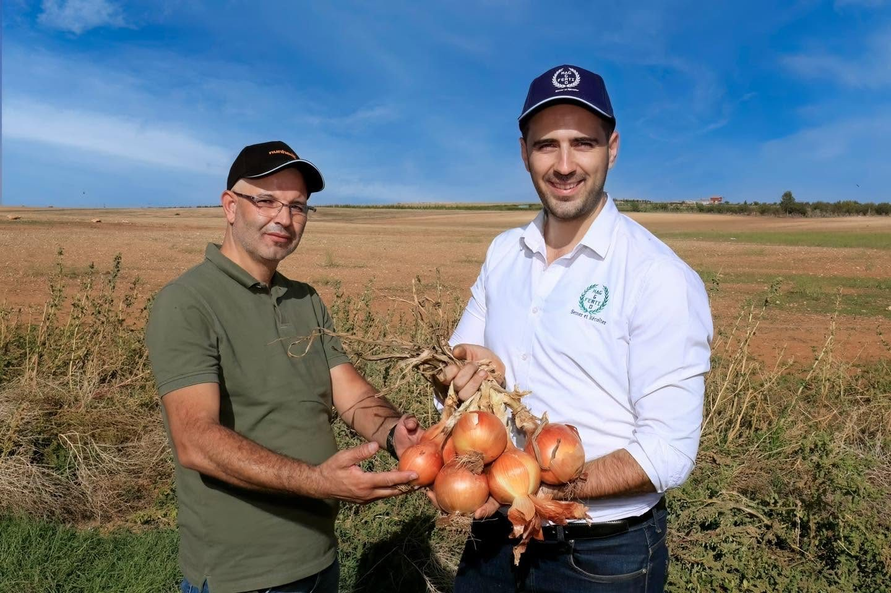

Biostimulant
Semences potagères, nutrition des plantes et protection des cultures : Agro Ferti Mag sélectionne les meilleures solutions et accompagne les agriculteurs algériens au champ.
Trois univers complémentaires, choisis pour les conditions algériennes et testés sur nos parcelles de démonstration.

Carotte, tomate, oignon, poivron, courgette, pastèque : des variétés hybrides performantes.
Voir les semences
Biostimulants, bio-promoteurs et correcteurs de carences pour des plantes plus vigoureuses.
Voir la nutrition
Fongicides et solutions naturelles pour protéger le rendement et la qualité des fruits.
Voir la protection

Depuis 2013, Agro Ferti Mag importe et distribue des intrants agricoles. Nos ingénieurs agronomes conseillent les agriculteurs, installent des essais et mesurent les résultats directement sur la parcelle.


Composition, doses et stades d'application de notre gamme nutrition, accessibles en un clic par l'agriculteur ou le revendeur.


Nous allons à la rencontre des agriculteurs, des revendeurs et des institutions partout dans le pays.



Responsables développement marché : développer les ventes, suivre les essais et accompagner les clients sur le terrain.
Un ingénieur vous rappelle pour choisir les semences et le programme de nutrition adaptés à votre culture.
Demander un conseilPour la création de votre site, Webminds vous offre un mois de visuels pour votre page Facebook et Instagram.